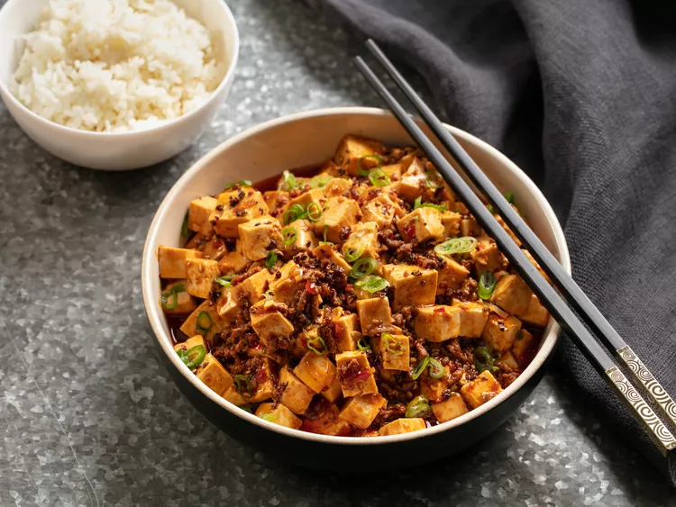

Mapo Tofu
Recipe and description taken from Serious Eats
Description
A traditional Sichuan dish, mapo tofu is made with simmered medium-firm silken tofu flavored with fermented bean paste, beef, plenty of red-hot roasted chili oil, and a handful of Sichuan peppercorns. When done right, the dish comes out with a thick coating of hot chili oil covering its surface, keeping the contents underneath hot in both senses of the word. It's a great representation of málà, or hot and numbing flavor.
It's dangerously captivating stuff. Just as your mouth seems about to spontaneously combust from the chili heat, the Sichuan peppers kick in, numbing it back to soothing calmness so you can take another bite and start the whole process over again. I go through bowls of it like a fiend.
Ingredients
- ¼ lb ground beef
- 1½ silken tofu (cut into ½-inch cubes)
- 1 tbsp Sichuan peppercorns
- ¼ cup neutral oil
- 1 tsp cornstarch
- 2 tsp water
- 3 cloves garlic (grated)
- 1 tbsp fresh ginger (grated)
- ¼ cup roasted chili oil
- lime juice (to taste)
- MSG (to taste)
For the Sauce
- ¼ cup chicken stock
- 1 tbsp dark soy sauce
- 2 tbsp Shaoxing wine
- 2 tbsp fermented chili bean paste
For the garnish
- 1 tbsp Sichuan peppercorns (ground)
- 3 scallions
Instructions
- Start heating a pot of water. Once boiling, place the tofu into a strainer and submerge for 1 minute before setting aside. Alternatively, heat tofu in the microwave for 1 minute per 12 oz of tofu.
- Toast 1 tbsp Sichuan peppercorns in a hot wok until lightly smoking, if time permits. Transfer to a mortar and pestle, then grind finely and set aside.
- Add the remaining peppercorns and canola oil to the wok. Heat over medium-high until fragrant, about 1½ minutes. Discard the peppercorns, leaving behind the oil.
- Mix cornstarch and cold water in a small bowl. Combine the ingredients for the sauce.
- Heat oil in the wok until smoking. Stir-fry the beef for 1 minute before adding garlic and ginger, cooking for 15 seconds. Stir in the sauce mixture and bring it to a boil. Add the cornstarch slurry and cook until thickened. Carefully fold in the tofu, being gentle to avoid breaking it.
- Stir in the chili oil and half the scallions, simmering for another 30 seconds. Add a spash of lime juice and MSG to taste. Transfer to a serving bowl, garnish with the remaining scallions and ground Sichuan pepper. Serve immediately with white rice.